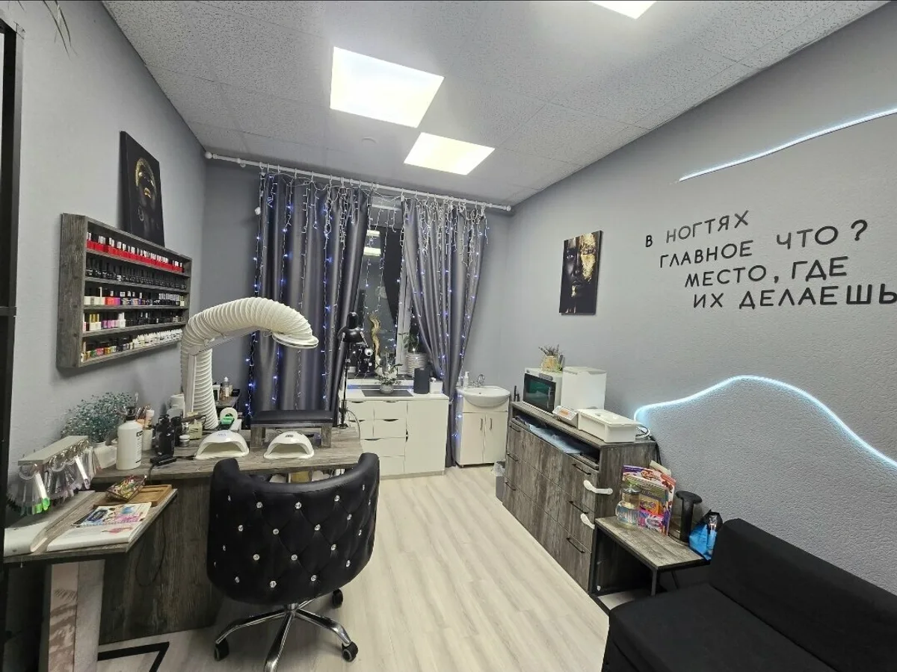
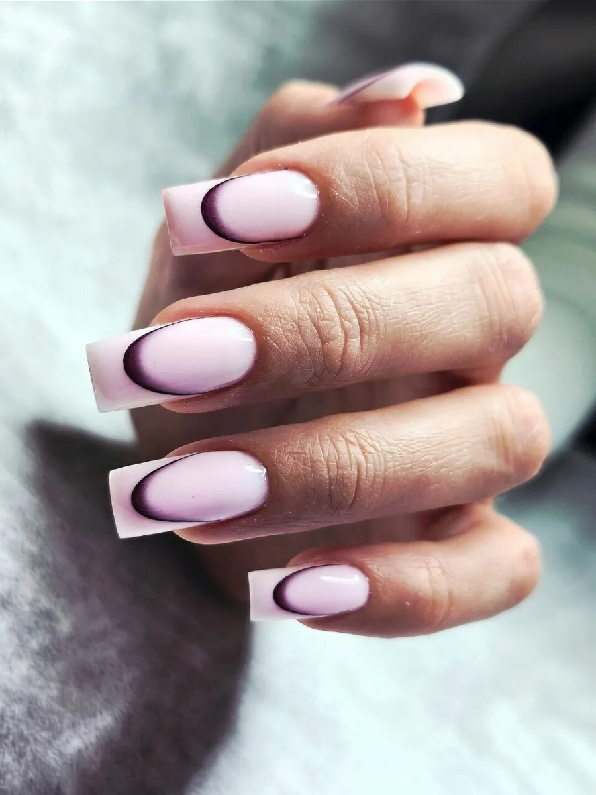
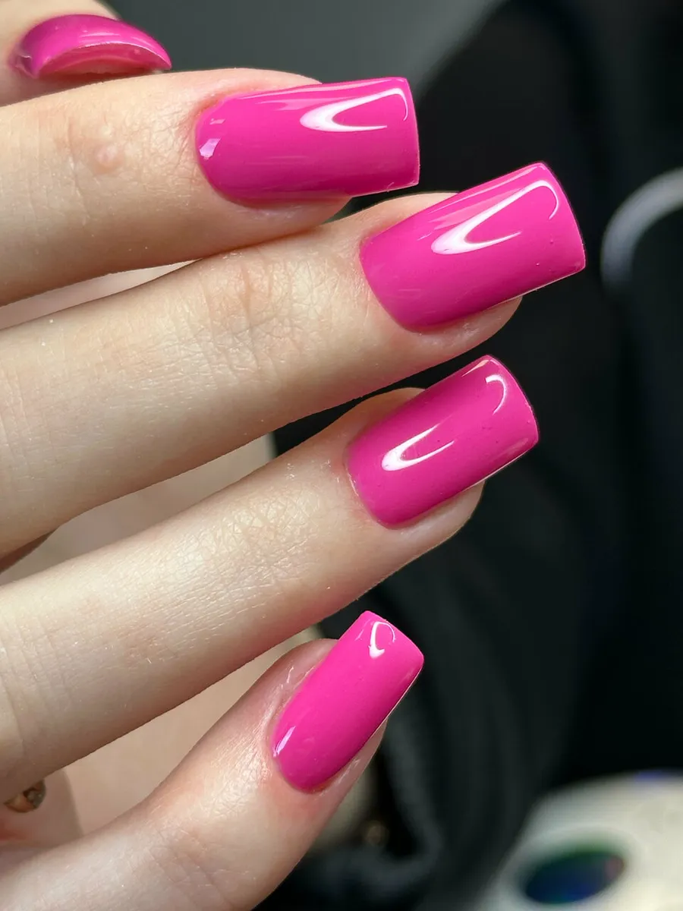
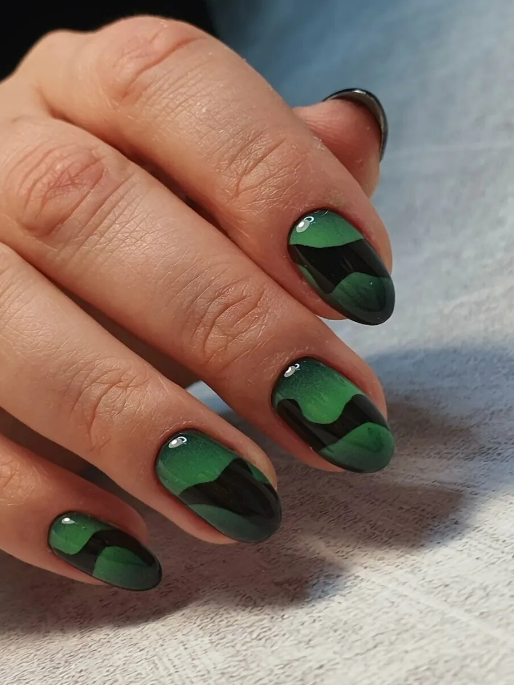
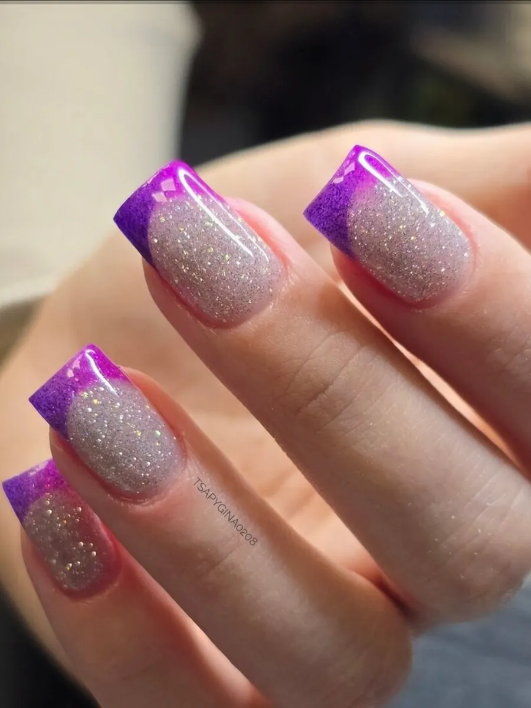
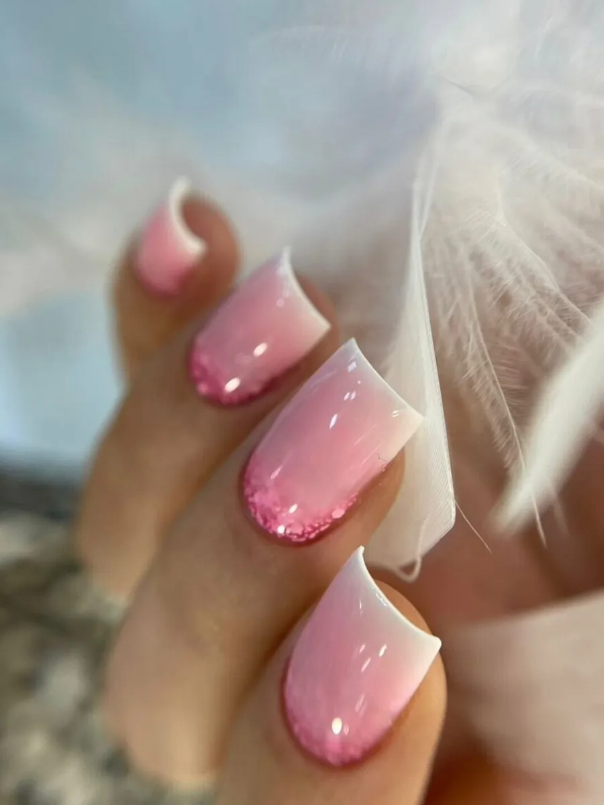
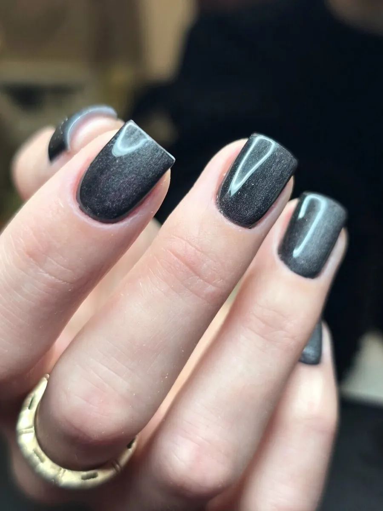

Ногтевая студия · Мурманск, Коминтерна, 5
Маникюр, который носится без сколов
Студия на улице Коминтерна, 5, 6 этаж: маникюр, покрытие гель-лаком, френч, укрепление и наращивание. Каждый день с 10 до 23, запись во ВКонтакте и по телефону.
- Коминтерна, 5, 6 этаж, офис 602/2
- Ежедневно с 10:00 до 23:00
- Рядом удобная парковка

Цены
Здесь будут ваши цены.
Маникюр и покрытие
- Маникюр без снятия и покрытияХ ХХХ руб.
- Покрытие гель-лак, однотонХ ХХХ руб.
- Снятие без покрытияХ ХХХ руб.
- Зачистка онихолизиса, травмы, онихорексисаХ ХХХ руб.
Укрепление и наращивание
- Укрепление или коррекциягелем, пудройХ ХХХ руб.
- Ламинирование ногтей гелемХ ХХХ руб.
- Наращивание, ремонт, донаращиваниеХ ХХХ руб.
Дизайн
- Френч, стемпингза ноготьХ ХХХ руб.
- Аэрографияза ноготь: 1 цвет, 2 цвета и более, трафаретыХ ХХХ руб.
Названия услуг - из прайса студии на Яндекс Картах.
Как проходит визит
- 01
Пишете во ВКонтакте
Выбираете день и время в переписке или звоните +7 (960) 021-21-84. Студия работает по предварительной записи.
- 02
Парковка рядом
Гостьи пишут на Картах, что рядом со студией удобная парковка, где можно оставить автомобиль.
- 03
Чисто и уютно
"Все инструменты проходят стерильную обработку" - из отзыва.
- 04
Кофе и выбор цветов
"Большой разнообразный выбор цветов" и "уютная обстановка и чашечка кофе всегда", - пишут на Картах.
- 05
Быстро и качественно
"Работает очень быстро и качественно", - из отзыва Дарьяны.






Удобно прийти
Каждый день с 10 до 23
Без выходных и по воскресеньям тоже - можно прийти после работы.
Коминтерна, 5
6 этаж, офис 602/2. Рядом удобная парковка.
Укрепление и наращивание
Укрепление и коррекция гелем или пудрой, ламинирование гелем, наращивание и ремонт ногтей.
Дизайн
Френч, стемпинг, аэрография и большой выбор цветов гель-лака.
Отзывы с Яндекс.Карт
"Удобно расположение, мастер выполняет качественный маникюр, ношу 3-4 недели без сколов и отслоек, большой разнообразный выбор цветов. Всегда можно подобрать удобное время, так же мастер работает по воскресеньям! Уютная обстановка и чашечка кофе всегда. Рекомендую всем, данную студию"
Мария Сентюрова · 16 мая 2026
"Обожаю маникюр от Иришки. Всегда аккуратно. Все материалы качественные. Чистота в кабинете. Мой любимый мастер."
Олеся Вуфштейн · 5 мая 2026
"Выбираю только эту студию! Ирина, мастер своего дела. Носка покрытия без сколов, самое главное время- быстро! Рекомендую"
Анастасия С. · 4 мая 2026
Отзывы с карточки на Яндекс.Картах, без правок.
Частые вопросы
Как записаться?
Напишите во ВКонтакте или позвоните: +7 (960) 021-21-84. Студия работает по предварительной записи.
Работаете по выходным?
Да, каждый день с 10:00 до 23:00, в том числе по воскресеньям.
Сколько держится покрытие?
В отзывах пишут: "ношу 3-4 недели без сколов и отслоек".
Делаете укрепление и наращивание?
Да: укрепление или коррекция гелем и пудрой, ламинирование ногтей гелем, наращивание, ремонт и донаращивание.
Как найти студию?
Мурманск, ул. Коминтерна, 5, 6 этаж, офис 602/2. Рядом удобная парковка.
Запись каждый день с 10:00 до 23:00
- Адрес
- ул. Коминтерна, 5, этаж 6, офис 602/2, Мурманск
- Часы
- Ежедневно 10:00-23:00
- Телефон
- +7 (960) 021-21-84
- ВКонтакте
- vk.ru/id30404050